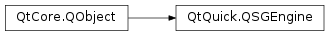

QSGEngine¶
Synopsis¶
Functions¶
- def
createRenderer() - def
createTextureFromId(id, size[, options=QSGEngine.CreateTextureOption()]) - def
createTextureFromImage(image[, options=QSGEngine.CreateTextureOption()]) - def
initialize(context) - def
invalidate()
Detailed Description¶
The
PySide2.QtQuick.QSGEngineclass allows low level rendering of a scene graph.A
PySide2.QtQuick.QSGEnginecan be used to render a tree ofPySide2.QtQuick.QSGNodedirectly on aPySide2.QtGui.QWindoworPySide2.QtGui.QOpenGLFramebufferObjectwithout any integration with QML,PySide2.QtQuick.QQuickWindoworPySide2.QtQuick.QQuickItemand the convenience that they provide.This means that you must handle event propagation, animation timing, and node lifetime yourself.
Note
This class is for very low level access to an independent scene graph. Most of the time you will instead want to subclass
PySide2.QtQuick.QQuickItemand insert yourPySide2.QtQuick.QSGNodein a normal QtQuick scene by overridingQQuickItem.updatePaintNode().See also
-
class
PySide2.QtQuick.QSGEngine([parent=nullptr])¶ Parameters: parent – PySide2.QtCore.QObjectConstructs a new
PySide2.QtQuick.QSGEnginewith itsparent
-
PySide2.QtQuick.QSGEngine.CreateTextureOption¶ The enums are used to customize how a texture is wrapped.
Constant Description QSGEngine.TextureHasAlphaChannel The texture has an alpha channel and should be drawn using blending. QSGEngine.TextureOwnsGLTexture The texture object owns the texture id and will delete the GL texture when the texture object is deleted. QSGEngine.TextureCanUseAtlas The image can be uploaded into a texture atlas. QSGEngine.TextureIsOpaque The texture object is opaque.
-
PySide2.QtQuick.QSGEngine.createRenderer()¶ Return type: PySide2.QtQuick.QSGAbstractRendererReturns a renderer that can be used to render a
PySide2.QtQuick.QSGNodetreeYou call
PySide2.QtQuick.QSGEngine.initialize()first with thePySide2.QtGui.QOpenGLContextthat you want to use with this renderer. This will return a null renderer otherwise.
-
PySide2.QtQuick.QSGEngine.createTextureFromId(id, size[, options=QSGEngine.CreateTextureOption()])¶ Parameters: - id –
PySide2.QtCore.uint - size –
PySide2.QtCore.QSize - options –
PySide2.QtQuick.QSGEngine.CreateTextureOptions
Return type: Creates a texture object that wraps the GL texture
iduploaded withsizeValid
optionsareTextureHasAlphaChannelandTextureOwnsGLTextureThe caller takes ownership of the texture object and the texture should only be used with this engine.
- id –
-
PySide2.QtQuick.QSGEngine.createTextureFromImage(image[, options=QSGEngine.CreateTextureOption()])¶ Parameters: - image –
PySide2.QtGui.QImage - options –
PySide2.QtQuick.QSGEngine.CreateTextureOptions
Return type: Creates a texture using the data of
imageValid
optionsareTextureCanUseAtlasandTextureIsOpaque.The caller takes ownership of the texture and the texture should only be used with this engine.
- image –
-
PySide2.QtQuick.QSGEngine.initialize(context)¶ Parameters: context – PySide2.QtGui.QOpenGLContextInitialize the engine with
context.Warning
You have to make sure that you call
QOpenGLContext.makeCurrent()oncontextbefore calling this.
-
PySide2.QtQuick.QSGEngine.invalidate()¶ Invalidate the engine releasing its resources
You will have to call
PySide2.QtQuick.QSGEngine.initialize()andPySide2.QtQuick.QSGEngine.createRenderer()if you want to use it again.
© 2018 The Qt Company Ltd. Documentation contributions included herein are the copyrights of their respective owners. The documentation provided herein is licensed under the terms of the GNU Free Documentation License version 1.3 as published by the Free Software Foundation. Qt and respective logos are trademarks of The Qt Company Ltd. in Finland and/or other countries worldwide. All other trademarks are property of their respective owners.